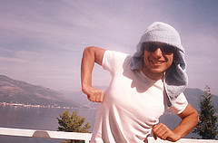
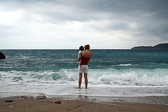
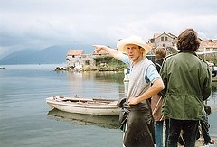
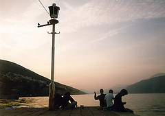
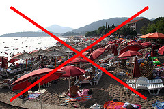

Savršeno letovanje
Savršen dan na savršenom letovanju, kako ga je modelovalo višegodišnje iskustvo. Jedna jedina apsolutna istina u vezi mora i letovanja, ultimativni vodič za osvešćenog modernog čoveka i ženu. Šta i kad raditi i zašto. Dakle...Negde oko 6 pola 7 - nikako kasnije! - valja ustati, izaći na terasu, skuvati kafu (po volji i po ukusu može se dodati određena količina irskog krem viskija) i uživati u jutarnjem pogledu na more. Muzička pozadina? Zero 7.
Ovo je jedini način kako se može uspešno započeti jedan savršen dan na moru. Svaki sledeći korak može se zameniti ovim ili onim, ali jutarnja meditacija u svetlu, vazduhu i vodi nema alternativu!
Neki vredniji pametnjakovići između ove početne aktivnosti i laganog doručka koji sledi uspeju da odu do plaže i isplivaju-izbrčkaju se nekih 45 minuta. Kako god bilo, važno je skicirati savršenu lokaciju koju ovakav model letovanja podrazumeva.
Zamislimo trougao stranica od 100 do 250 m. Gornje teme je vila u kojoj ti odsedaš i nalazi se na 20-30 mnv, što je dovoljno za dobre vizure. Drugo teme je centar lokalne zajednice, u obliku pjacete uz minijaturno pristanište čamaca (nikako jahti!). Par kamenih zgrada, plave ili zelene žaluzine, kafana sa tri stola napolju, prodavac novina - tako to izgleda. Treće teme je plaža, izdvojena i slabo popularna. Nema ležaljki i suncobrana, spasilaca, pedalina, plažnih barova itd. Samo pesak/šljunak i čisto more, i listopadni hlad u zaleđu.
U ovom trokutu dešava se gro tvojih aktivnosti te tri nedelje koliko si sebi priuštio da se odmoriš, prezaposleni čoveče.
Okupao si se u moru, kupio The Times - vreme je za doručak. Prepuštam kolegi Kikomanu da sastavi jelovnik, ili bar precizira koje kombinacije dolaze u obzir, pa da onda to koristimo kao svojevrsni vodič za letovanje.
Prepodnevne aktivnosti mogu biti raznovrsne; čitanje knjiga je jedna od njih (Komo od Srđe Valjarevića može odlično otvoriti serijal). Druga bi svakako bila višečasovna šetnja po prirodi, do vrha nekog brda, ili obilazak kakvog interesantnog mesta. Za neke od ovih izleta neophodna su kola, sopstvena ili rentirana, svejedno. Još jedna zanimljiva varijanta: odlazak u kafanu na celo pre podne, pijenje vina i razmišljanje. Ako je neophodno, može se zapaliti neki kvalitetniji tompus ili druga žiža.
Naravno da se posle ručka i minimalne šetnje odlazi na zasluženi popodnevni odmor. Savršeno provetrena soba, blagi povetarac pomera platnene zastore, ugodna hladovina - tvoje je samo da legneš i polako se prepustiš okrepljujućem snu.
Predvečernji i večernji časovi puni su svakojakih sadržaja. Prvo, negde oko 19.00, treba se ponovo malo iskupati. Na molu u centru mesne zajednice, potom, treba pecati u light varijanti, i ćutati. Nekome je ovo pravo vreme za vožnju bicikle.
Ponekad se za stare ili nove prijatelje kada već skoro padne mrak priprema roštilj. O tome opširnije ovde. Muzička podloga bi svakako mogli biti svi u rasponu od Arcade Fire do Sons&Daughters, pa i šire. Jednom rečju - žurka sve u 16.
Tiha morska noć zaslužuje tebe i tebi dvoje - troje bliskih na ribarskom čamcu koji klizi površinom mora. Ležiš na leđima i gledaš zvezde, meteore, satelite. Ili pomažeš oko spuštanja mreža, a u hard core varijanti možda čak i veslaš. Poneki put bi umesto toga otišao u obližnji grad, među ljude, ali sasvim dozirano i oprezno, na večeru ili običnu šetnju korzoom.
Provedi ovakvih dvadeset dana na prelasku iz juna u jul ili početkom septembra, i uglavi negde u sezoni barem sedam dana krstarenja yahticom sa malo većim društvom, i videćeš... videćeš...
 RSS feed
RSS feed
 sadržaji se objavljuju pod
sadržaji se objavljuju pod